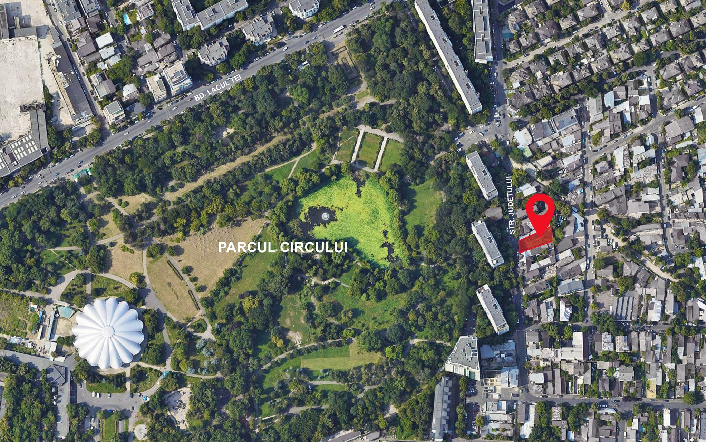
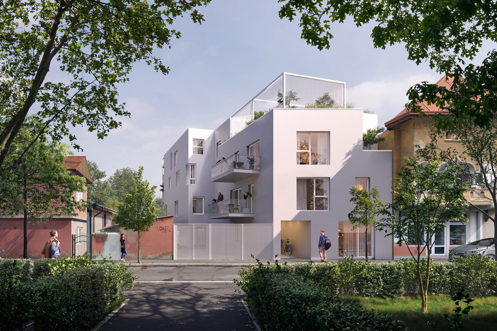
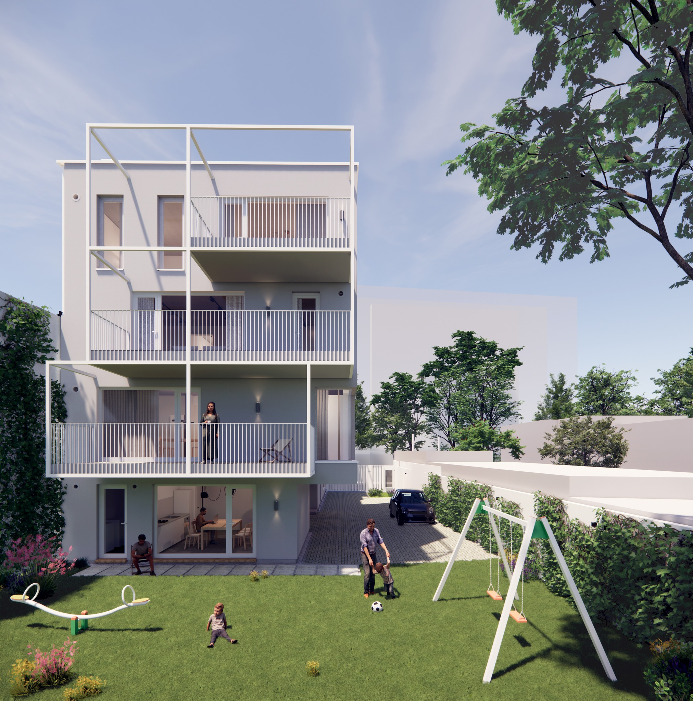
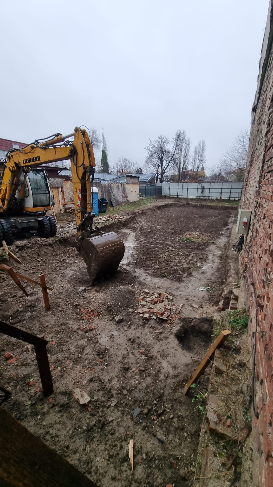
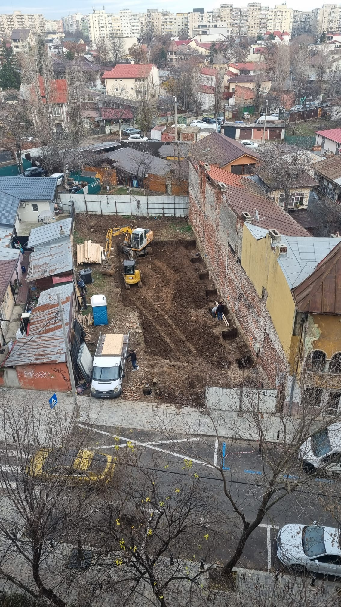

Mă numesc Lucian Luţă, sunt arhitect și co-fondator LTFB Studio. Aceasta este povestea primului proiect ApartamenTUal — un bloc cu 5 apartamente, cu un spațiu comun, o curte comună, o terasă comună și poate o viitoare comunitate, lângă un parc.
De unde a pornit ideea
Totul a început înainte de pandemie, când am realizat, împreună cu Liviu Fabian, asociatul meu, că oferta de apartamente din piața imobiliară era de o calitate destul de slabă pentru prețurile cerute. Iar dacă găseai o calitate mai bună, prețurile creșteau considerabil — mai ales într-o zonă semicentrală. Cam același lucru îl putem spune, de fapt, și acum.
Am început prin a discuta cu diverși prieteni și le-am propus să ne construim propriul nostru bloc, cu apartamente personalizate în funcție de nevoile fiecăruia. Am fi creat și o comunitate de vecini în același timp. Am fi fost puțini vecini, cu siguranță ar fi fost mai ieftin pentru calitatea pe care ne-o doream, calitatea locuirii ar fi fost clar mai bună față de ce ne oferea piața. Iar noi, ca arhitecți, am fi putut controla profesionist tot procesul.
După mai multe discuții, interesul pentru această abordare era mare, dar nu toți prietenii noștri voiau să se mute. Fiecare avea diverse planuri financiare — credite deja luate, alte investiții planificate — așa că am renunțat.
Co-housing și Baugruppen — descoperirea conceptului
Am început apoi o documentare și am descoperit ceea ce în alte țări se numește co-housing și Baugruppen: în esență, un grup de oameni care se asociază și pornesc împreună un proces prin care își construiesc propriile apartamente, așa cum și le doresc.
Co-housing-ul pornește, în principiu, de la o comunitate deja închegată — locuirea împreună devine o necesitate firească, iar spațiile comune de interacțiune sunt ample. În schimb, Baugruppen (modelul german) este mai pragmatic: nu pornește neapărat de la o comunitate și nu are acest scop, însă o poate forma după finalizarea apartamentelor. Prioritatea Baugruppen este eficiența construirii unor apartamente în funcție de nevoile membrilor.
Am creat inițial pagina de Facebook și landing page-ul ApartamenTUal pentru a promova aceste alternative de construire și locuire. Pe pagina de Facebook postam diverse terenuri de vânzare și arătam ce se poate construi pe ele — câte apartamente ar intra, o mică volumetrie schematică. Interesul a fost destul de mare la început și am organizat câteva întâlniri pe tema asta.
Grupul s-a format. Apoi am găsit terenul
S-a format un grup mai mare — 15-20 de familii — în căutare de terenuri prin București. La un moment dat am găsit un teren foarte bun lângă Parcul Circului, iar câțiva din grup au fost foarte hotărâți pe el. Am stabilit numărul de apartamente, suprafețele aproximative, am demarat negocierile cu proprietarul, câteva studii de teren. Între timp m-am alăturat și eu acestui grup.

Înainte de cumpărarea terenului am semnat un contract de asociere legalizat la notar, prin care descriam întregul proces viitor de construire: ce apartamente vor rezulta, cui îi vor reveni, ce cotă indiviză îi revine fiecăruia. Pentru ca totul să fie clar de la început.
Am cumpărat terenul și am început procesul de proiectare și autorizare. LTFB Studio a realizat proiectul și s-a ocupat de toată partea de avize și autorizație.
Proiectul — fiecare și-a desenat apartamentul
A fost interesant cum fiecare a reușit să-și personalizeze compartimentările interioare în funcție de nevoi. LTFB Studio, ca proiectant, a trebuit să mențină un echilibru între necesitățile legate mai mult de interior — suprafețe, fluxuri — și exteriorul care se raportează la vecinătăți, la oraș.
Experiența de mic dezvoltator a fost provocatoare pentru fiecare dintre noi.


Alegerea constructorului
După încheierea fazei de proiectare și obținerea autorizației de construire, am căutat destul de mult timp un constructor și am cerut multe oferte. Ne-a ajutat consultanța oferită de LTFB Studio pentru compararea ofertelor și alegerea unui constructor de calitate, dar nu exagerat de scump.
După multe întâlniri, ședințe, call-uri, am decis în cele din urmă pentru Mozaic Engineering — o firmă tânără, cu doi ingineri constructori experimentați și dedicați, care au gestionat echipe profesioniste.
Au existat și momente dificile
Unul dintre cele mai grele momente a fost când unul din membrii grupului a decis să iasă din proces și să-și vândă partea. Am început să căutăm cu toții alt asociat interesat de preluarea cotei indivize și continuarea procesului pentru construirea unui apartament.
După aproximativ două luni de promovare printre prieteni, cu diverse prezentări realizate de LTFB Studio — apartamente în diverse configurații — ni s-a alăturat o altă familie cu care am semnat contractul de asociere.
Construcția a început
Am demarat construcția și de atunci totul a mers cursiv. Am avut o colaborare bună cu constructorul și toți din grup urmăreau și vizitau șantierul — fiecare și-a văzut propriul apartament în toate stadiile de construcție.


Decembrie 2024 — primele zile de șantier. Săpătura începe, vecinii își văd noul vecin care apare.
Tot grupul s-a organizat pe diverse task-uri: cereri de oferte, branșamente, diverse avize. Au existat, în mod evident, tensiuni — dar le-am depășit, pentru că în cele din urmă fiecare avea același scop comun: să realizăm această construcție și să putem locui în apartamentele visate, copiii să se joace în curte, să reușim să avem confortul pe care ni l-am dorit.
Apartamentele prind contur
Un tur scurt prin interior: instalațiile, holurile, încăperile care încep să arate a apartamente. Fiecare cu propria lui istorie, fiecare gândit împreună cu viitorul proprietar.
Un fel de lifetime project
Pentru fiecare dintre noi, acest proiect a devenit un fel de lifetime project. Și chiar dacă nu ne cunoșteam bine înainte de a începe, am început încet-încet să formăm un fel de comunitate.
Asta e povestea primului prototip ApartamenTUal. E încă în construcție, e încă în desfășurare. Dar ne-a învățat un lucru clar: se poate. Se poate să construiești împreună, se poate să economisești bani, se poate să ai exact apartamentul pe care îl vrei, și se poate să câștigi vecini cu care chiar te înțelegi.
Iar acum, cu platforma ApartamenTUal, vrem ca același lucru să fie posibil pentru cât mai multe alte grupuri.
Vrei să faci parte dintr-un grup similar?
Platforma ApartamenTUal te ajută să găsești oameni cu interese asemănătoare, să identifici terenuri potrivite și să pornești propriul tău proiect.